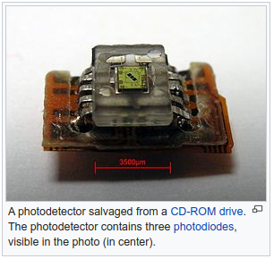
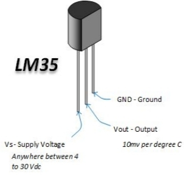

Unit 5 Sensors
Robotic sensors are used to estimate a robot’s condition and environment. These signals are passed to a controller to enable appropriate behavior. Sensors in robots are based on the functions of human sensory organs. Robots require extensive information about their environment in order to function effectively.
Source: Adapted from the Wikipedia article “Robotic Sensors” (Wikipedia contributors 2021d), which is released under the Creative Commons Attribution-Share-Alike License 3.0.
5.1 Reading: Types of Robot Sensors
There are hundreds of sensors made today to sense virtually anything you can think of, and it is almost impossible to list all available sensors.
A light sensor is used to detect light and create a voltage difference.
A sound sensor (generally a microphone) detects sound and returns a voltage proportional to the sound level.
Temperature sensors are ICs providing voltage difference for a temperature change.
Contact sensors are those which require physical contact against other objects to trigger.
A proximity sensor can detect the presence of a nearby object within a given distance, without any physical contact.
Tactile pressure sensors are useful in robotics as they are sensitive to touch, force, and pressure.
Positioning sensors are used to approximate the position of a robot, some for indoor positioning and a few others for outdoor positioning.
An accelerometer is a device that measures acceleration and tilt.
A gyroscope or simply Gyro is a device that measures and helps maintain orientation using the principle of angular momentum.
Voltage sensors typically convert lower voltages to higher voltages or vice versa.
Current sensors are electronic circuits that monitor the current flow in a circuit and output either a proportional voltage or a current.
Source: Adapted from the article “Types of Robot Sensors” (robotplatform.com 2021b).


Show/Hide solution
1.light sensor; 2.temperature sensorWhat are the components in this photo that can be used as sensors?
Show/Hide solution
positioning sensor, contact sensors, light sensor, proximity sensor, voltage sensor5.2 Writing: Force Sensitive Resistor
Size: 1/2" (12.5mm) diameter active area by 0.02" thick (Interlink does have some that are as large as 1.5“x1.5”)
Price $7.00 from the Adafruit shop
Resistance range: Infinite/open circuit (no pressure), 100KΩ (light pressure) to 200Ω (max. pressure)
Force range: 0 to 20 lb. (0 to 100 Newtons) applied evenly over the 0.125 sq in surface area
Power supply: Any! Uses less than 1mA of current (depends on any pullup/down resistors used and supply voltage)
Check the Adafruit website for more information.
5.3 Speaking: Making Decisions with Sensor Inputs
5.4 Listening: Researchers Develop “Robot Skin” Sensor
The latest is this: a
Researchers from the Korea Advanced Institute of Science and Technology have developed a tactile sensor that can measure not only the amount of pressure applied on contact but also pinpoint the
When the sensor is pressed, different colors appear on a screen, depending on the
The sensor also locates the exact spot where pressure is exerted through the computer screen.
“The sensor can act as the skin of a robot because it uses
The team attached electrodes on the surface of sensors and let
The sensors are made with ‘piezoresistive composite’ which is a combination of
This composite has the property to change the value of electric
Researchers say manufacturing these sensors is relatively easy and cost-efficient.
“The sensors can be used widely in the robot industry, and they are particularly promising for rehabilitation purposes.”
The research team expects the technology to be applied in a variety of fields such as robotic skin, 3D computer interface, and wearable medical devices.
Show/Hide solution
tactile; location; level of pressure; conductive; current; silicon; resistance5.5 My Glossary
Translate these terms into your language.